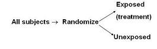

Reducing Confounding During Study Design
Lead Author(s): Jeff Martin, MD
Methods for Reducing Confounding During Study Design
The causal diagram below presents ways to prevent or manage confounding during study design.
- You can block or interrupt the association between the confounder and the exposure (shown in the top diagram)
- You can block or interrupt the association between the confounder and the disease (in the bottom diagram).
- You can block or interrupt both arms.
There are three main ways to reduce confounding during study design:
1. Randomization
Definition of Randomization:
- random assignment of subjects to exposure (e.g., treatment) categories 
This will block all association between the confounder and the exposure:
2. Restriction
Definition of Restriction: Restrict enrollment to only those subjects who have a specific value/range of the confounding variable
This will eliminate:
3. Matching
Definition of Matching:
- Match unexposed or non-case subjects to those of the comparison group (either exposed or cases) in terms of the confounder in question.
Cohort Study: unexposed subjects are matched to exposed subjects according to their values for the potential confounder. 
Case Control Study: non-diseased controls are matched to diseased cases on the confounding variable.